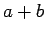

โปรแกรมประยุกต์ทั่วไป เช่น โปรแกรมประมวลผลคำ หรือโปรแกรมฐานข้อมูลขนาดใหญ่ จะประกอบด้วย การเขียนโปรแกรมเป็นหมื่นเป็นแสนบรรทัด และต้องทำงานร่วมกับซอฟต์แวร์ไลบรารี่ต่างๆ ที่มีการทำงานอันซับซ้อน ซึ่งมีหน้าที่สำหรับการสนับสนุนโปรแกรมประยุกต์นั้นๆ อย่างไรก็ตาม ในความเป็นจริงคอมพิวเตอร์ฮาร์ดแวร์มีความสามารถในการทำการประมวลผลคำสั่งที่พื้นฐานมากๆ จากการประยุกต์ใช้งานของโปรแกรมที่มีการใช้งานซับซ้อน มีระบบที่จะแปลงมาสู่คำสั่งพื้นฐานระดับล่าง ซึ่งการทำงานจะต้องผ่านระดับชั้นของซอฟต์แวร์หลายชั้น เพื่อที่จะแปลงหรือแปลการทำงานระดับสูงมาเป็นคำสั่งพื้นฐานที่คอมพิวเตอร์สามารถทำงานได้
ลำดับชั้นของซอฟต์แวร์เหล่านี้ มีลักษณะเป็นลำดับชั้นที่แน่ชัด โดยที่โปรแกรมประยุกต์อยู่วงนอกสุด, ซอฟต์แวร์ระบบอยู่ตรงกลางระหว่างฮาร์ดแวร์, และโปรแกรมประยุกต์ แสดงในรูป 1.3
ซอฟต์แวร์ระบบมีหลายลักษณะ เราสามารถแบ่งซอฟต์แวร์ระบบได้เป็น 2 ลักษณะใหญ่ๆ ได้แก่ ระบบปฏิบัติการ (Operating System) และตัวแปลภาษา (Compiler) ระบบปฏิบัติการจะทำงานเพื่อเชื่อมต่อระหว่างโปรแกรมผู้ใช้งาน และระบบฮาร์ดแวร์ ระบบปฏิบัติการจะให้บริการในหลายลักษณะรวมถึงฟังก์ชั่นในการใช้งานคอมพิวเตอร์ โดยมีหน้าที่สำคัญดังต่อไปนี้
ตัวอย่างของระบบปฏิบัติการในปัจจุบันได้แก่ Windows, Linux, และ MacOS
ตัวแปลภาษา (Compiler) ทำหน้าที่แปลภาษาที่เขียนในภาษาระดับสูง เช่น ภาษาซี หรือ ภาษาจาวา ลงมาเป็นคำสั่ง ที่ฮาร์ดแวร์สามารถประมวลผลได้ จากการแปลงภาษาระดับสูงที่มีความซับซ้อนลงมาเป็นภาษาระดับล่างที่ฮาร์ดแวร์สามารถประมวลผลได้ในลักษณะพื้นฐาน ตัวแปลภาษาจึงต้องมีความซับซ้อนสูงไปด้วย
ในอุปกรณ์อีเล็กทรอนิกส์ เราสามารถส่ง สัญญาณระหว่างอุปกรณ์อีเล็กทรอนิกส์ต่างๆ ได้ในลักษณะเปิดปิดสวิตซ์ ที่เป็นการส่งสัญญาณไฟฟ้า สัญลักษณ์ 2 ลักษณะ ที่ใช้ในระบบคอมพิวเตอร์ได้แก่ 0 กับ 1 เราจึงพิจารณาให้ภาษาเครื่องนั้นอยู่ในเลขฐานสอง แต่ละสัญลักษณ์เรียกว่า 1 บิต คอมพิวเตอร์จะทำตามคำสั่ง ซึ่งคำสั่งเป็นกลุ่มของบิตที่คอมพิวเตอร์จะสามารถเข้าใจได้ ตัวอย่างเช่น
1000110010100000
คำสั่งดังกล่าวเป็นการสั่งให้คอมพิวเตอร์ทำการบวกเลข 2 ชุด
ในระยะแรกนั้น นักเขียนโปรแกรมจะติดต่อสื่อสารคอมพิวเตอร์คำสั่งที่ระบบเป็นตัวเลขฐานสอง แต่งานในลักษณะดังกล่าว เป็นงานที่มีกระบวนงานที่ล่าช้าและใช้เวลามากในการเข้าใจ เพื่อแก้ปัญหาดังกล่าว จึงมีความพยายามสร้างระบบภาษา ให้มีความใกล้เคียงกับระบบการคิดของมนุษย์ ในช่วงแรก มีการแปลระบบภาษาดังกล่าวให้เป็นเลขฐานสอง โดยใช้คน อย่างไรก็ตามวิธีการดังกล่าวยังใช้เวลามากอยู่ จึงมีผู้คิดค้นโปรแกรมเพื่อแปลระบบภาษาดังกล่าว ให้เป็นคำสั่งในตัวเลขฐานสอง ในตอนแรกโปรแกรมนั้นถูกเรียกว่า Assembler โดยโปรแกรมจะทำการแปลงคำสั่งที่มีลักษณะเป็นสัญลักษณ์ให้มนุษย์เข้าใจง่าย ไปเป็นเลขฐานสอง ตัวอย่างเช่น
add a, b
Assembler จะทำการแปลให้เป็น
1000110010100000
คำสั่งขั้นต้นเป็นการบอกให้คอมพิวเตอร์บวกตัวเลข 2 ตัวได้แก่ และ ซึ่งลักษณะการใช้งานดังกล่าวจึงเป็นที่มาของภาษาที่เรียกว่าแอสแซมบลี (Assembly)
ถึงแม้ว่าจะมีการพัฒนาเป็นอย่างมากจากแนวคิดข้างต้น ภาษาแอสแซมบลี ยังห่างไกลกับการใช้งานจริง นักเขียนโปรแกรมจะต้องเขียนคำสั่งทุกคำสั่งในภาษาแอสแซมบลี ซึ่งเป็นการบังคับให้นักเขียนโปรแกรมจะต้องมีแนวคิดเหมือนกับการทำงานของเครื่อง ความต้องการให้คอมพิวเตอร์สามารถทำงานได้ตามความต้องการของมนุษย์มีสูงมากในปัจจุบัน สังคมจึงได้ลงทุนเป็นจำนวนมากที่จะดำเนินการหาวิธีการพัฒนาการสั่งงานคอมพิวเตอร์ให้สามารถทำงานได้ตามที่คนต้องการ จึงเป็นจุดผลักดันให้เกิดการพัฒนาภาษาคอมพิวเตอร์ต่างๆ เป็นจำนวนมาก
จากการที่โปรแกรมมีความสามารถที่จะแปลงภาษาหนึ่งไปยังอีกภาษาหนึ่ง จึงเป็นที่มาให้เกิดการพัฒนาภาษาโปรแกรมระดับสูงที่ Compiler จะแปลงภาษานั้นๆ ให้ออกมาเป็นคำสั่ง
Compiler จะเอื้อให้นักเขียนโปรแกรมเขียนคำสั่งในลำดับสูงเช่น 
a + b;
และ Compiler จะทำการแปลงออกมาเป็นภาษาแอสแซมบลี ดังต่อไปนี้
add a, b
จากนั้น Assembler จะทำการแปลงคำสั่งแอสแซมบลี ให้เป็นตัวเลขฐานสอง ได้ดังนี้
1000110010100000
รูป 1.4 แสดงลำดับขั้นของการแปลงในภาษาต่างๆ จากภาษาระดับสูง มาเป็นภาษาแอสเซมบลี และภาษาเครื่องตามลำดับ
ส่วนประกอบของคอมพิวเตอร์ได้แก่ ส่วนรับข้อมูลเข้า ส่วนส่งข้อมูลออก หน่วยความจำ เส้นทางส่งข้อมูล และส่วนควบคุม เส้นทางส่งข้อมูลและส่วนควบคุมมักถูกเรียกว่า ตัวประมวลผล รูป 1.5 แสดงโครงสร้างการทำงานคอมพิวเตอร์มาตรฐาน
รูป 1.6 แสดงคอมพิวเตอร์แบบตั้งโต๊ะ ที่ประกอบด้วย คีย์บอร์ด เม้าส์ จอภาพ และตัวกล่องที่บรรจุฮาร์ตแวร์อยู่ภายใน ที่มองไม่เห็นได้แก่ อุปกรณ์เครือข่ายที่สามารถต่อเชื่อมไปยังเครื่องอื่น ในภาพนี้จะเห็นอุปกรณ์คอมพิวเตอร์ที่สำคัญ 2 ชิ้นได้แก่ อุปกรณ์รับข้อมูลเข้า ได้แก่ แป้นคีย์บอร์ด และหน้าจอ จากเทคโนโลยีโทรทัศน์ จอ CRT สามารถสแกนภาพได้ครั้งละ 1 เส้นในอัตรา 30 ถึง 75 ครั้งต่อนาที ทำให้ผู้ใช้งานไม่สามารถสังเกตการกระพริบได้ของหน้าจอ แต่ละรูป 1.7 แสดงการทำงานของจอภาพแสดงผล ที่ประกอบด้วย เมทริกส์ของภาพ ที่มีการแสดงรูปจากการประกอบกันของ พิกเซลที่แสดงผลสี
รูป 1.8 แสดงภายในของเครื่องคอมพิวเตอร์ที่ประกอบด้วย แหล่งจ่ายไฟฟ้า แผงวงจรหลัก ตัวเล่นซีดี Zip Drive
ส่วนสำคัญในคอมพิวเตอร์นั้นได้แก่ ตัวโปรเซสเซอร์ ซึ่งในรูป 1.9 แสดงถึงภาพขยายของโปรเซสเซอร์ ชิป Pentium IV
หน่วยความจำที่ใช้ในเครื่องคอมพิวเตอร์ในรูปสร้างจาก DRAM คำว่า DRAM ย่อมาจาก Dynamic Random Access Memory โดยที่หน่วยความจำหลายตัวถูกนำมาใช้ร่วมกันหลายตัวเพื่อจะเก็บคำสั่งและข้อมูลและโปรแกรมหนึ่งๆ ในตัวโปรเซสเซอร์มีหน่วยความจำอีกอย่างเรียกว่า หน่วยความจำแคช ประกอบด้วยหน่วยความจำขนาดเล็ก แต่รวดเร็วมากแต่มีหน้าที่เป็นบัฟเฟอร์ ให้กับหน่วยความจำแบบ DRAM หน่วยความจำแบบแคช ใช้เทคโนโลยีแตกต่างจาก DRAM โดยที่หน่วยความจำแบบแคชใช้เทคโนโลยี SRAM ที่มีขนาดต่อหน่วยใหญ่กว่าและราคาแพงกว่า
หน่วยความจำที่กล่าวมาจะเก็บข้อมูลได้ก็ต่อเมื่อมีพลังงานหล่อเลี้ยงอยู่ พลังงานที่ว่านี้คือพลังงานไฟฟ้า ในอีกทางหนึ่งถ้าเราต้องการเก็บข้อมูลให้ไม่หายไปในขณะที่ไม่มีพลังงานไฟฟ้าเราสามารถเก็บได้ในแผ่นจานแม่เหล็กหรือฮาร์ดดิสก์ ฮาร์ดดิสก์เป็นอุปกรณ์เก็บรักษาข้อมูลที่ประกอบด้วยจานแม่เหล็กหมุนด้วยความเร็วสูง (4,500-15,000 รอบต่อนาที) โดยที่ข้อมูลไม่หายไปเมื่อปิดพลังงานที่ส่งไปเลี้ยง รูป 1.10 แสดงภายในของฮาร์ดดิสก์ ที่มีจาน 10 แผ่นและหัวอ่าน ตัวอย่างอื่นๆ ของการเก็บข้อมูลลักษณะนี้ได้แก่ Optical Disk ได้แก่ DVD, CD, เทปแม่เหล็ก, หรือ Flash Memory รูป 1.11 แสดงการขยายตัวของหน่วยความจำ DRAM เมื่อเทียบกับเวลา
กว่าจะมาเป็นโปรเซสเซอร์ชิปจะต้องผ่านกระบวนการหลายขั้นตอน รูป 1.12 แสดงขั้นตอนพื้นฐานในการทำโปรเซสเซอร์ชิป Pentium IV หลังจากที่ได้ท่อนซิลิกอน ซึ่งเป็นท่อนวงกลมขนาดเส้นผ่านศูนย์กลาง 8 ถึง 12 นิ้ว และยาว 12 ถึง 24 นิ้ว ท่อนซิลิกอนดังกล่าวจะถูกหั่นบางๆ อย่างระมัดระวังออกมาเป็นเวเฟอร์ที่มีความหนาน้อยกว่า 0.1 นิ้ว จากนั้นเวฟเฟอร์ก็ถูกผ่านขั้นตอนต่างๆ เป็นจำนวนมาก ซึ่งเป็นขั้นตอนทางเคมี เพื่อจะสร้างทรานซิสเตอร์ตัวนำและฉนวนในตำแหน่งที่เหมาะสม จากนั้นก็ผ่านขั้นตอนการทดสอบแต่ละตัวและแยกตัวโปรเซสเซอร์ออกมาจากเวเฟอร์ จากนั้นทำการบรรจุ ใส่ขา และตัวบรรจุกล่อง จากนั้นทำการทดสอบอีกครั้งก่อนส่งถึงผู้ใช้งาน รูป 1.13 แสดงเวเฟอร์ขนาด 8 นิ้ว ที่บรรจุโปรเซสเซอร์ โดยโปรเซสเซอร์แต่ละตัวจะมีขนาด 250 ตารางมิลิเมตร และประกอบด้วยตัวทรานซิสเตอร์ 5 ล้านตัว ใช้เทคโนโลยี 0.18 ไมครอน
จากที่ตัวโปรเซสเซอร์ทำงานได้อย่างรวดเร็ว จึงต้องคำนึงถึงปัญหาของอุณหภูมิอย่างมาก เนื่องจากกินกำลังงานไฟฟ้ามาก ลองพิจารณาดูถึงโปรเซสเซอร์ Intel Pentium IV ใช้พลังงาน 82 วัตต์ที่จะต้องนำออกมาจากตัวชิบ ซึ่งจะมีพื้นที่ผิวใหญ่มาก รูป 1.14 แสดงแผงระบายความร้อนที่ออกแบบมาขนาดใหญ่ที่จะกระจายความร้อนออกจากตัวโปรเซสเซอร์
จากที่ผ่านมาเราพบว่า คอมพิวเตอร์มีอัตราการเพิ่มของประสิทธิภาพ 2 เท่า ทุก 18 เดือน ให้ดูแนวโน้มในรูป 1.15
![\includegraphics[width=5in]{fig/Chapter_1/Figure_1.17.eps}](img26.png)